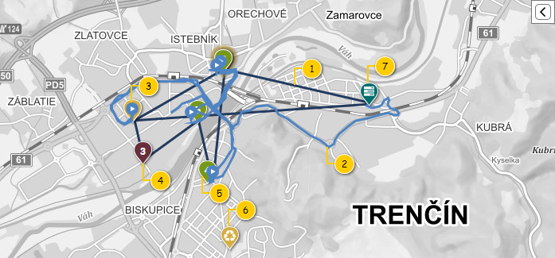
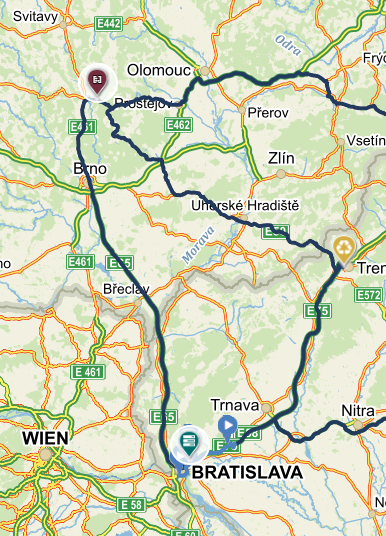
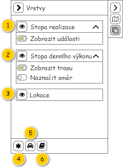
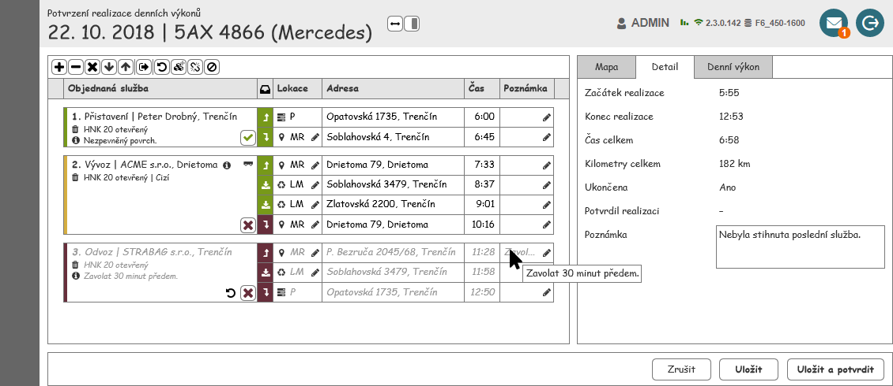
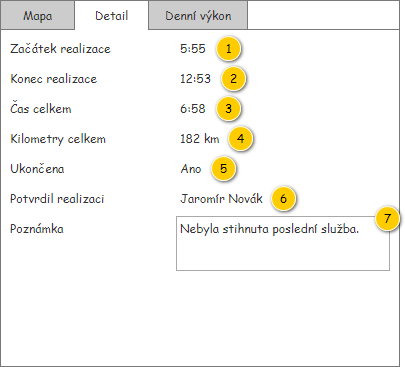
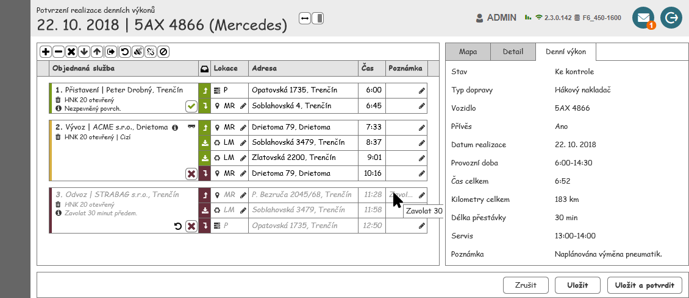
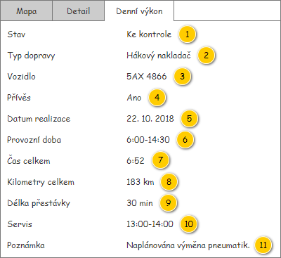

Stručný popis
Jedná se o panel zobrazující detailní informace o Realizaci denního výkonu, kdy je samotná Realizace denního výkonu předána jako vstupní hodnota.
Uživatelské rozhraní
Panel je tvořen jednotlivými kartami:
- Karta s mapou Realizace denního výkonu – viz Mapa realizace denního výkonu.
- Karta s detailními informacemi o Realizaci denního výkonu – viz Detail realizace denního výkonu.
- Karta s detailními informacemi o odpovídajícím Denním výkonu – viz Detail denního výkonu.
Mapa realizace denního výkonu
Nejdříve je zobrazen drátový diagram celé obrazovky se zobrazenou mapou, následně je karta s mapou podrobně popsána. Nadpis samotné karty je pak následující: Mapa.
Poznámka:
- Chování mapy a zobrazené informace v ní částečně vychází z 300UI01: Mapa realizace denních výkonů, jedná se pak o zjednodušený pohled.
- V rámci drátového diagramu nemusí Objednané služby v přehledu odpovídat těm na mapě.
Barvy a ikony jsou společné pro celou obrazovku kontroly realizace Denních výkonů, proto jsou uvedeny společně na jednom místě – viz Použité barvy a ikony. Pokud je v dalším textu odkazováno na barvy či ikony, jedná se o hesla obsažená v tomto přehledu.
Poznámka: Základní zobrazení mapy vychází z jejího obecného popisu.

Rozložení
Nejprve je uveden náhled na mapu spolu s prvky, které se v ní vyskytují. Následně jsou pak popsány jednotlivé vrstvy obsahující tyto prvky.
Drátový diagram

Přehled UI komponent
| Callout | Popis | Vrstva |
|---|---|---|
| 1 | Plánovaná stopa denního výkonu. | Stopa denního výkonu |
| 2 | Skutečná stopa realizace denního výkonu. | Stopa realizace denního výkonu |
| 3 | Událost získaná z vozidla. | Stopa realizace denního výkonu |
| 4 | Další monitorované lokace – označená jako neobsloužená. | Lokace |
| 5 | Další monitorované lokace – označená jako obsloužená. | Lokace |
| 6 | Lokace představující likvidační místo. | Lokace |
| 7 | Lokace představující provozovnu. | Lokace |
Interakce
V rámci mapy jsou dostupné pouze základní interakce.
- Zobrazení ToolTipů k jednotlivým prvkům mapy. Popis chování je pak popsán u konkrétních prvků, pro které je ToolTip dostupný (viz Formát výstupu pro ToolTip lokace).
- Možnost označit odpovídající Objednanou službu v přehledu, a to kliknutím na na konkrétní Lokaci objednané služby. Popis chování je pak popsán v rámci konkrétní vrstvy (viz Označení objednané služby).
Vykreslené vrstvy
Stopa realizace denního výkonu
Jedná se o vrstvu zobrazující skutečnou stopu Realizace denního výkonu, tedy takovou stopu, kterou odpovídající Vozidlo skutečně projelo.
Skutečná stopa je získána z Realizace denního výkonu, která je zobrazena v rámci obrazovky. Vykreslení této Realizace denního výkonu pak probíhá následovně:
- Systém vykreslí stopu realizace: atribut Trajektorie odpovídající Realizace denního výkonu.
- Systém vykreslí informace o realizaci odpovídajících lokací:
- Systém nalezne odpovídající Obsluhy lokací objednaných služeb – hledá takové záznamy, které splňují všechny dále uvedené podmínky zároveň:
- Hodnota atributu Realizace denního výkonu odpovídá této Realizace denního výkonu.
- Systém vyhodnotí odpovídající Způsob vyhodnocení realizace – atribut Způsob vyhodnocení realizace odpovídajícího Denního výkonu (atribut Denní výkon této Realizace denního výkonu).
- Pro všechny získané Obsluhy lokací objednaných služeb (viz krok 2.a):
- Systém vykreslí odpovídající informace o realizaci dané lokace – vyhodnoceno dle získaného Způsobu vyhodnocení realizace (viz krok 2.b):
- PTO: Informace jsou obsaženy v rámci entity FLW Událost (vychází z entity Událost manipulace s nádobou):
- Systém nalezne odpovídající FLW Událost – hledá takový záznam, který splňuje všechny dále uvedené podmínky zároveň:
- Hodnota atributu Identifikátor odpovídá hodnotě atributu Identifikátor záznamu o realizaci právě zkoumané Obsluhy lokace objednané služby (viz krok 2.c).
- Systém vykreslí polohu této FLW Události v mapě: prvek FLW událost (viz tabulka dále).
- Pokud nejsou souřadnice k dispozici, nedochází ani k vykreslení v mapě.
- Systém nalezne odpovídající FLW Událost – hledá takový záznam, který splňuje všechny dále uvedené podmínky zároveň:
- FOB: Informace jsou obsaženy v rámci entity FOB informace o realizaci lokace objednané služby:
- Systém nalezne odpovídající FOB informace o realizaci lokace objednané služby – hledá takový záznam, který splňuje všechny dále uvedené podmínky zároveň:
- Hodnota atributu Identifikátor odpovídá hodnotě atributu Identifikátor záznamu o realizaci právě zkoumané Obsluhy lokace objednané služby (viz krok 2.c).
- Systém vykreslí polohu této FOB informace o realizaci lokace objednané služby v mapě: prvek FOB informace o realizaci lokace objednané služby (viz tabulka dále).
- Pokud nejsou souřadnice k dispozici, nedochází ani k vykreslení v mapě.
- Pokud mají být dodatečně zobrazeny aktivace PTO – vrstva Dodatečné zobrazení aktivací PTO v rámci Nástrojové lišty je nastavená jako zobrazená (hodnota TRUE).
- Systém nalezne odpovídající FLW Událost – hledá takový záznam, který splňuje všechny dále uvedené podmínky zároveň:
- Hodnota atributu Identifikátor odpovídá hodnotě atributu Identifikátor záznamu o realizaci právě zkoumané Obsluhy lokace objednané služby (viz krok 2.c).
- Hodnota atributu Identifikátor odpovídá hodnotě atributu Identifikátor záznamu o realizaci právě zkoumané Obsluhy lokace objednané služby (viz krok 2.c).
- Systém vykreslí polohu této FLW Události v mapě: prvek FLW událost (viz tabulka dále).
- Pokud nejsou souřadnice k dispozici, nedochází ani k vykreslení v mapě.
- Pokud nejsou souřadnice k dispozici, nedochází ani k vykreslení v mapě.
- Systém nalezne odpovídající FLW Událost – hledá takový záznam, který splňuje všechny dále uvedené podmínky zároveň:
- Systém nalezne odpovídající FOB informace o realizaci lokace objednané služby – hledá takový záznam, který splňuje všechny dále uvedené podmínky zároveň:
- Jinak: není provedena žádná akce.
- Jedná se o chybový stav (NotImplementedException).
- Poznámka: Potřebné informace jsou v rámci implementace získány odlišným způsobem (přes Lokaci objednané služby a Realizace denního výkonu).
- PTO: Informace jsou obsaženy v rámci entity FLW Událost (vychází z entity Událost manipulace s nádobou):
- Systém vykreslí odpovídající informace o realizaci dané lokace – vyhodnoceno dle získaného Způsobu vyhodnocení realizace (viz krok 2.b):
- Systém nalezne odpovídající Obsluhy lokací objednaných služeb – hledá takové záznamy, které splňují všechny dále uvedené podmínky zároveň:
- Systém získá jednotlivé události, které v rámci realizace vznikly: všechny Události manipulace s nádobou splňující uvedené podmínky:
- Hodnota atributu Vozidlo odpovídá Vozidlu, které provádí realizaci Denního výkonu: atribut Vozidlo entity Denní výkon – atribut Denní výkon entity Realizace denního výkonu.
- Hodnota atributu Datum a čas odpovídá datu realizace Denního výkonu: atribut Datum realizace entity Denní výkon – atribut Denní výkon entity Realizace denního výkonu (poznámka: je porovnáváno pouze datum, konkrétní čas není do porovnání zahrnut).
- Systém vykreslí všechny získané události: atribut Souřadnice entity Událost manipulace s nádobou.
Popis a grafická podoba jednotlivých prvků zobrazených v rámci této vrstvy jsou uvedeny v tabulce.
| Prvek | Hodnota | Formát | Drátový diagram | Text pro ToolTip | Nástrojová lišta | Poznámka |
|---|---|---|---|---|---|---|
| Stopa | Stopa – atribut Trajektorie entity Realizace denního výkonu. | – | Odpovídá položce Stopa realizace nástrojové lišty (zobrazení/skrytí celé vrstvy). | – | ||
| FLW Událost | Hodnoty atributů Zeměpisná šířka, Zeměpisná délka odpovídající FLW Události. | Barva: Spojnice lokací v mapě/Skutečnost. V rámci prvku je pak zobrazena ikona ra-play (viz Ostatní/FLW událost). |  | Viz Kontextová nápověda FLW události. | Odpovídá položce Stopa realizace nástrojové lišty – Další možná nastavení: Zobrazení událostí (zobrazení/skrytí událostí). Pokud není zobrazena celá vrstva, nejsou zobrazeny ani události. | – |
| FOB informace o realizaci lokace objednané služby | Hodnoty atributů Zeměpisná šířka, Zeměpisná délka odpovídající FOB informace o realizaci lokace objednané služby. | Barva: Spojnice lokací v mapě/Skutečnost. V rámci prvku je pak zobrazena ikona ra-user (viz Ostatní/FOB informace o realizaci lokace objednané služby). |  | Viz Kontextová nápověda FOB informace o realizaci lokace objednané služby. | Odpovídá položce Stopa realizace nástrojové lišty – Další možná nastavení: Zobrazení událostí (zobrazení/skrytí událostí). Pokud není zobrazena celá vrstva, nejsou zobrazeny ani události. | – |
Kontextová nápověda FLW události
Formát bublinkové nápovědy s informacemi o FLW Události. Dílčí položky jsou pak uvedeny ve stejném pořadí jako v tabulce.
| Položka | Hodnota | Formát | Viditelná |
|---|---|---|---|
| Čas | Entita FLW Událost. | Čas: Hodnota je zobrazena v uvedeném formátu: Čas. | Vždy. |
| Adresa | Entita FLW Událost. | Adresa: Hodnota je zobrazena v uvedeném formátu: Zkrácená adresa. | Pokud je hodnota k dispozici. |
| Souřadnice | Entita FLW Událost. | Souřadnice: Hodnota je zobrazena v uvedeném formátu: Souřadnice. | Vždy. |
Kontextová nápověda FOB informace o realizaci lokace objednané služby
Formát bublinkové nápovědy s informacemi o FOB informace o realizaci lokace objednané služby. Dílčí položky jsou pak uvedeny ve stejném pořadí jako v tabulce.
| Položka | Hodnota | Formát | Viditelná |
|---|---|---|---|
| Čas | Entita FOB informace o realizaci lokace objednané služby. | Čas: Hodnota je zobrazena v uvedeném formátu: Čas. | Vždy. |
| Adresa | Entita FOB informace o realizaci lokace objednané služby. | Adresa: Hodnota je zobrazena v uvedeném formátu: Zkrácená adresa. | Pokud je hodnota k dispozici. |
| Souřadnice | Entita FOB informace o realizaci lokace objednané služby. | Souřadnice: Hodnota je zobrazena v uvedeném formátu: Souřadnice. | Vždy. |
Stopa denního výkonu
Jedná se o vrstvu zobrazující naplánovanou stopu Denního výkonu, tedy takovou stopu, kterou uživatel naplánoval.
Plánované stopa je získána z Realizace denního výkonu, která je zobrazena v rámci obrazovky. Samotné stopa je pak rekonstruována z dílčích tras dostupných u Lokací objednané služby, které jsou naplánovány na odpovídající Denní výkon. Postup, jakým jsou Lokace objednané služby získány, je pak následující:
- Systém si připraví prázdnou pomocnou kolekci Lokací objednané služby.
- Systém získá Lokace objednané služby představující Start a vloží ji do pomocné kolekce: atribut Lokace objednané služby entity Položka denního výkonu – atribut Počáteční položka denního výkonu entity Denní výkon – atribut Denní výkon entity Realizace denního výkonu.
- Pro všechny Položky denního výkonu obsažené v odpovídajícím Denním výkonu dle jejich typu (atribut Typ položky): atribut Položky denního výkonu entity Denní výkon – atribut Denní výkon entity Realizace denního výkonu.
- Objednaná služba:
- Pokud tato Položka denního výkonu obsahuje i samostatnou Lokaci objednané služby: hodnota atributu Lokace objednané služby je různá od NULL (poznámka: jedná se o Objednanou službu, která je reprezentována dobou trvání).
- Systém vloží obsaženou Lokaci objednané služby do pomocné kolekce: atribut Lokace objednané služby entity Položka denního výkonu.
- Jinak – pro všechny obsažené Lokace objednané služby: atribut Lokace objednané služby entity Objednaná služba – atribut Objednaná služba entity Položka denního výkonu.
- Pokud zkoumaná Lokace objednané služby splňuje všechny uvedené podmínky, je Systémem vložena do pomocné kolekce:
- atribut Provést nabývá hodnoty TRUE.
- Pokud zkoumaná Lokace objednané služby splňuje všechny uvedené podmínky, je Systémem vložena do pomocné kolekce:
- Pokud tato Položka denního výkonu obsahuje i samostatnou Lokaci objednané služby: hodnota atributu Lokace objednané služby je různá od NULL (poznámka: jedná se o Objednanou službu, která je reprezentována dobou trvání).
- Lokace objednané služby – Systém vloží obsaženou Lokaci objednané služby do pomocné kolekce: atribut Lokace objednané služby entity Položka denního výkonu.
- Časový interval – Systém vloží obsaženou Lokaci objednané služby do pomocné kolekce: atribut Lokace objednané služby entity Položka denního výkonu.
- Rozdělení – Systém vloží obsaženou Lokaci objednané služby do pomocné kolekce: atribut Lokace objednané služby entity Položka denního výkonu.
- Objednaná služba:
- Systém získá Lokace objednané služby představující Cíl a vloží ji do pomocné kolekce: atribut Lokace objednané služby entity Položka denního výkonu – atribut Koncová položka denního výkonu entity Denní výkon – atribut Denní výkon entity Realizace denního výkonu.
Ze získaných Lokací objednané služby je pak zrekonstruována celá stopa – způsob vykreslení se pak odvíjí od nastavení této vrstvy v nástrojové liště mapy (viz tabulka). Pokud nejsou nalezeny alespoň 3 Lokace objednané služby, není stopa vykreslena vůbec – v takovém případě odpovídající Denní výkon obsahuje pouze Start a Cíl.
| Způsob vykreslení | Postup vykreslení | Poznámka |
|---|---|---|
| Přímé spojnice |
| Popsané chování odpovídá odebírání prvků z datové struktury Fronta. Je tedy zachováno stejné pořadí, v jakém byly tyto Lokace objednané služby získány. |
| Skutečná trasa | Pro všechny získané Lokace objednané služby:
| Při vykreslení je nutné zachovat stejné pořadí, v jakém byly tyto Lokace objednané služby získány. |
Popis a grafická podoba jednotlivých prvků zobrazených v rámci této vrstvy jsou uvedeny v tabulce.
| Prvek | Hodnota | Formát | Drátový diagram | Text pro ToolTip | Nástrojová lišta | Poznámka |
|---|---|---|---|---|---|---|
| Stopa | Stopa – atribut Trasa do další lokace entity Lokace objednané služby. Stopa pak může být vykreslena i jako přímá spojnice mezi jednotlivými Lokacemi objednané služby. V takovém případě není použita hodnota atributu Trasa do další lokace. | Barva: Spojnice lokací v mapě/Plán. V rámci vykreslené stopy může být dále naznačen její směr. |  | – | Odpovídá položce Stopa denního výkonu nástrojové lišty (zobrazení/skrytí celé vrstvy). Zobrazení trasy: Odpovídá položce Stopa denního výkonu nástrojové lišty – Další možná nastavení: Zobrazení trasy (zobrazení přímých spojnic nebo skutečných tras). Naznačení směru: Odpovídá položce Stopa denního výkonu nástrojové lišty – Další možná nastavení: Naznačení směru (zobrazení/skrytí naznačení směru). | – |
Lokace
Jedná se o vrstvu zobrazující jednotlivé Lokace objednané služby, které jsou podstatné z pohledu monitoringu a kontroly realizace.
Lokace objednané služby, které mají být vykresleny, jsou získány z Realizace denního výkonu, která je zobrazena v rámci obrazovky.
Samotné Lokace objednané služby jsou dostupné z Položek denního výkonu, které jsou získány následovně: atribut Položky denního výkonu entity Denní výkon – atribut Denní výkon entity Realizace denního výkonu. Načítání Lokací objednané služby se pak liší dle typu Položky denního výkonu (atribut Typ položky):
- Objednaná služba: Lokace objednané služby entity Objednaná služba – atribut Objednaná služba entity Položka denního výkonu (poznámka: může nastat případ, kdy bude kolekce Lokací objednané služby prázdná).
- Lokace objednané služby: atribut Lokace objednané služby entity Položka denního výkonu.
- Časový interval: nejsou zaneseny,
- Rozdělení: nejsou zaneseny.
Ze získaných Lokací objednané služby jsou pak vykresleny ty, které jsou zajímavé z pohledu monitoringu a kontroly realizace – splňují všechny uvedené podmínky:
- atribut Provést nabývá hodnoty TRUE,
- atribut Monitoring realizace nabývá hodnoty TRUE.
Pokud v rámci nalezených Lokací objednané služby není obsažena Provozovna, pro kterou byl Denní výkon plánován (atribut Provozovna entity Denní výkon – atribut Denní výkon entity Realizace denního výkonu), je vykreslena také.
Popis a grafická podoba jednotlivých Lokací objednané služby zobrazených v rámci této vrstvy jsou uvedeny v tabulce. Vykreslení Lokací objednané služby je pak odlišeno dle jejich typu (atribut Typ lokace).
| Typ lokace | Hodnota | Formát | Drátový diagram | Text pro ToolTip | Nástrojová lišta | Poznámka |
|---|---|---|---|---|---|---|
| Místo realizace | Souřadnice pro umístění v mapě – atribut Souřadnice entity Lokace objednané služby. | V rámci vykresleného prvku je vypsán text identifikující odpovídající Objednanou službu – viz Pořadí lokace objednané služby. Jednotlivé Lokace objednané služby jsou graficky rozlišeny dle toho, zda již došlo k jejich obsluze. Vyhodnocení probíhá následovně:
V případě, kdy je Lokace objednané služby obsažena v rámci označené Objednané služby, je graficky odlišena – viz Formát lokace označené objednané služby. | Data pro ToolTip jsou získána z odpovídající Lokace objednané služby – viz Formát výstupu pro ToolTip lokace. | Odpovídá položce Lokace nástrojové lišty (zobrazení/skrytí celé vrstvy). | – | |
| Likvidační místo, Výchozí likvidační místo | Souřadnice pro umístění v mapě – atribut Souřadnice entity Lokace objednané služby. | Ikona a barva: Typ lokace/Likvidační místo. V případě, kdy je Lokace objednané služby obsažena v rámci označené Objednané služby, je graficky odlišena – viz Formát lokace označené objednané služby . |  | – | ||
| Provozovna | Souřadnice pro umístění v mapě – atribut Souřadnice entity Lokace objednané služby. | Ikona a barva: Typ lokace/Provozovna. V případě, kdy je Lokace objednané služby obsažena v rámci označené Objednané služby, je graficky odlišena – viz Formát lokace označené objednané služby . |  | – | ||
| Místo dočasného uložení | Souřadnice pro umístění v mapě – atribut Souřadnice entity Lokace objednané služby. | Ikona: Typ lokace/Místo dočasného uložení. Barva se pak liší podle toho, zda je Lokace objednané služby uvedeného typu obsloužena či ne (atribut Datum a čas obsluhy entity Obsluha lokace objednané služby – atribut Obsluha lokace objednané služby entity Lokace objednané služby):
V případě, kdy je Lokace objednané služby obsažena v rámci označené Objednané služby, je graficky odlišena – viz Formát lokace označené objednané služby. | – |
Pořadí lokace objednané služby
Zobrazené pořadové číslo je získáno z odpovídající Objednané služby – tedy takové Objednané služby, ve které je Lokace objednané služby obsažena. Zobrazené číslo pak zobrazuje pořadí Objednané služby v rámci odpovídající Realizace denního výkonu.
Samotné pořadové číslo je pak získáno následovně:
- atribut Pořadí v kontrole realizace entity Objednaná služba, ve které je Lokace objednané služby obsažena.
Poznámka: Pokud se jedná o Objednanou službu, která má 2 různá Místa realizace (např. pokud je Typem úkonu Manipulace), jsou tato dvě místa Místa realizace rozlišena následovně:
- výchozí Místo realizace je označeno jako a (příklad: 1a),
- cílové Místo realizace je označeno jako b (příklad: 1b).
Označení objednané služby
Uživatel může v rámci mapy provést označení Objednané služby v přehledu. Docílit toho může několika způsoby:
- Uživatel klikne levým tlačítkem myši na Lokací objednané služby v rámci mapy.
- Uživatel klikne levým tlačítkem myši na Lokací objednané služby v rámci kontextové nabídky pro shluk mapy (viz Překrývající se lokace).
Pokud uživatel zvolí požadovanou Lokaci objednané služby, systém označí takovou Objednanou službu, ve které je Lokace objednané služby obsažena (atribut Lokace objednané služby). Označení je pak umožněno pouze pro Lokace objednané služby splňující všechny dále uvedené podmínky zároveň:
- Atribut Typ lokace odpovídající Lokace objednané služby nabývá jedné z dále uvedených hodnot: Místo realizace, Místo dočasného uložení.
Zvýraznění Lokací objednané služby obsažených v označené Objednané službě je pak vykresleno nad zvýrazněním shluku (viz Zvýraznění lokací objednané služby v mapě). I v tomto případě však musí být zachováno zobrazení kontextové nabídky shluku po kliknutí do stejné oblasti.
Poznámka: V rámci kontextové nabídky shluku nejsou jednotlivé Lokace objednané služby zvýrazňovány.
Formát lokace označené objednané služby
Pokud je v rámci přehledu této obrazovky označena Objednaná služba, jsou odpovídající Lokace objednané služby zvýrazněny. Tyto Lokace objednané služby jsou pak získány následovně:
- atribut Lokace objednané služby entity Objednaná služba.
U těchto Lokací objednané služby je dočasně, po dobu označení Objednané služby, změna jejich barva – konkrétně dojde ke ztmavení o 20 %.
Poznámka: Požadované řešení bude ještě analyzována z důvodu složitosti jeho implementace. Do té doby budou Lokace objednané služby zvýrazněny následovně – viz obrázek.

Formát výstupu pro ToolTip lokace
Formát výstupu s informacemi o Lokaci objednané služby pro ToolTip je společný pro všechny Lokace objednané služby. Pro některé typy však nejsou zobrazeny všechny položky – viz tabulka. Položky jsou pak uvedeny ve stejném pořadí jako v tabulce.
| Položka | Hodnota | Formát | Viditelná |
|---|---|---|---|
| Akce | Entita Lokace objednané služby. | Akce: | Pokud se jedná o Lokaci objednané služby jednoho z uvedených typů:
|
| Typ lokace | Entita Lokace objednané služby. | Typ lokace: | Vždy. |
| Adresa | Entita Adresa – atribut Adresa entity Lokace objednané služby. | Adresa: Pokud není dostupné Číslo orientační:
Pokud není dostupné Číslo popisné:
| Vždy. |
| Časové okno | Entita Lokace objednané služby. | Časové okno: | Pokud není splněna alespoň jedna z uvedených podmínek:
|
| Zákazník | Entita Zákazník – atribut Objednavatel entity Objednávka – atribut Objednávka entity Položka objednávky – atribut Položka objednávky entity Objednaná nádoba – atribut Objednaná nádoba entity Objednaný úkon – atribut Objednaný úkon entity Objednaná služba, ve které je Lokace objednané služby obsažena. | Zákazník: | Pokud se jedná o Lokaci objednané služby jednoho z uvedených typů:
|
| Objednávka | Entita Objednávka – atribut Objednávka entity Položka objednávky – atribut Položka objednávky entity Objednaná nádoba – atribut Objednaná nádoba entity Objednaný úkon – atribut Objednaný úkon entity Objednaná služba, ve které je Lokace objednané služby obsažena. | Objednávka: <Číslo objednávky> | Pokud se jedná o Lokaci objednané služby jednoho z uvedených typů:
|
| Poznámka: | Entita Lokace objednané služby. | Poznámka: | Pokud je hodnota k dispozici. |
Kontextová nabídka
V rámci mapy je po kliknutí pravým tlačítkem myši na Lokaci objednané služby zobrazena kontextová nabídka. Ta umožňuje provedení určitých akcí, které se mohou lišit dle typu konkrétní Lokace objednané služby. Kontextová nabídka vychází z jejího obecného popisu (viz 700UI09: Kontextová nabídka), její struktura je pak uvedena v tabulce. Pokud by měla být zobrazena prázdná nabídka, žádná z položek není viditelná, není nabídka zobrazena vůbec.
Poznámka: Pokud uživatel klikne pravým tlačítkem myši na Lokaci objednané služby představující shluk, nabídka není zobrazena. V těchto případech je nutné nejprve zobrazit Lokace objednané služby obsažené ve shluku, až následně je možné v zobrazené nabídce zobrazit tuto nabídku pro konkrétní Lokaci objednané služby.
| Položka | Typ položky | Nadpis | Viditelná | Chování |
|---|---|---|---|---|
| Upravit místo realizace | Tlačítko | Upravit místo realizace | Pokud se jedná o Lokaci objednané služby typu Místo realizace (atribut Typ lokace). Pokud má uživatel oprávnění na editaci Zákazníka (EDIT_RP_CUSTOMERS, viz Oprávnění na typ entity). | Systém spustí 500UC08: Upravit místo realizace, na vstup UC jsou předány následující hodnoty:
|
| Upravit likvidační místo | Tlačítko | Upravit likvidační místo | Pokud se jedná o Lokaci objednané služby typu Likvidační místo či Výchozí likvidační místo (atribut Typ lokace). Pokud má uživatel oprávnění na editaci Likvidačního místa (EDIT_RP_DISPOSAL_SITES, viz Oprávnění na typ entity). | Systém spustí , na vstup UC jsou předány následující hodnoty:
|
Překrývající se lokace
V praxi může snadno nastat situace, kdy se na malé ploše vyskytuje více Lokací objednané služby, ty se pak logicky překrývají, pokud je zobrazíme v mapě. Uživatel vidí jen omezenou množinu informací, což není žádoucí. Problém pak bude řešen obdobně jako na obrazovce pro plánování Denních výkonů, chování je pak popsáno zde: Překrývající se lokace. V některých ohledech se pak chování liší, rozdíly oproti uvedenému chování jsou uvedeny dále.
Interakce v rámci nabídky s lokacemi objednané služby
Jednotlivé interakce pro shluky se mohou lišit dle konkrétního UC, proto je tato část uvedena i zde.
| Interakce | Spuštění | Vstupní podmínky | Chování | Poznámka |
|---|---|---|---|---|
| Označení objednané služby | Kliknutí na Lokaci objednané služby levým tlačítkem myši. | Hodnota atributu Typ lokace odpovídající Lokace objednané služby nebývá jedné z dále uvedených hodnot:
|
| Lokace objednané služby zbývajících typů nejsou v rámci nabídky buď zobrazeny, nebo se mohou vyskytovat ve více Objednaných službách zároveň. Proto kliknutí na ně nezpůsobí výběr Objednané služby v rámci obrazovky. Samotné označení Objednané služby je pak popsáno v rámci Označení objednané služby. |
| Zobrazení kontextové nabídky lokace objednané služby | Kliknutí na Lokaci objednané služby pravým tlačítkem myši. | Hodnota atributu Typ lokace odpovídající Lokace objednané služby nebývá jedné z dále uvedených hodnot:
Je viditelná alespoň jedna z položek kontextové nabídky, viz Kontextová nabídka. |
| Lokace objednané služby zbývajících typů nejsou v rámci nabídky buď zobrazeny, nebo není žádoucí pro ně akci provádět. Proto kliknutí na ně nezpůsobí zobrazení kontextové nabídky (byla by zobrazena prázdná nabídka). Nabídka může být zobrazena maximálně pro jednu Lokaci objednané služby zároveň. Pokud uživatel klikne mimo nabídku, přepne kartu prohlížeče a podobně, kontextová nabídka je uzavřena. |
| Zobrazení detailních informací o lokaci objednané služby | Najetí myší na Lokaci objednané služby. | – |
| Detailní informace jsou zobrazeny v kontextové nabídce podobně jako u Lokací objednané služby přímo v mapě, viz Formát výstupu pro ToolTip lokace. Nabídka může být zobrazena maximálně pro jednu Lokaci objednané služby zároveň. Pokud uživatel opustí Lokaci objednané služby, zavře nabídku, přepne kartu prohlížeče a podobně, kontextová nabídka je uzavřena. |
Nástrojová lišta
Nástrojová lišta mapy vychází z jejího obecného popisu. Navíc je doplněna o možnost rozšířeného nastavení, které je k dispozici ve skupině Vrstvy této nástrojové lišty.
Drátový diagram

Přehled UI komponent
| Callout | Nadpis | Typ položky | Popis | Výchozí hodnota | Další možná nastavení | Chování | Poznámka |
|---|---|---|---|---|---|---|---|
| 1 | Stopa realizace | Rozšířená | Slouží k zobrazení/skrytí skutečné stopy v rámci realizace Denního výkonu. Dále je možné skrýt události získané spolu s polohou Vozidla. | TRUE: je zobrazena vrstva. | Zobrazení událostí:
Dodatečné zobrazení aktivací PTO:
| Provede nastavení vrstvy Stopa realizace denního výkonu. | Ovládací prvek pro zobrazení aktivací PTO není naznačen na obrázku. |
| 2 | Stopa denního výkonu | Rozšířená | Slouží k zobrazení/skrytí plánované stopy Denního výkonu. Dále je možné změnit nastavení jednotlivých spojnic. | TRUE: je zobrazena vrstva. | Zobrazení trasy:
Naznačení směru:
| Provede nastavení vrstvy Stopa denního výkonu. | – |
| 3 | Lokace | Základní | Slouží k zobrazení/skrytí polohy těch Lokací objednané služby, které jsou monitorovány v rámci realizace Denního výkonu. | TRUE: je zobrazena vrstva. | – | Provede nastavení vrstvy Lokace. | – |
| 4 | Zobrazit vše
| – | Tlačítko pro zobrazení všech dostupných vrstev. | – | – | Viz Rychlé volby – sloupec Vše. | Nadpis se zobrazuje ve formě ToolTipu po najetí myši na tlačítko. |
| 5 | Zobrazit pouze skutečnost
| – | Tlačítko pro zobrazení všech vrstev, které zobrazují skutečnou realizaci Denního výkonu. | – | – | Viz Rychlé volby – sloupec Skutečnost. | Nadpis se zobrazuje ve formě ToolTipu po najetí myši na tlačítko. |
| 6 | Zobrazit pouze plán
| – | Tlačítko pro zobrazení všech vrstev, které zobrazují plánovanou realizaci Denního výkonu. | – | – | Viz Rychlé volby – sloupec Plán. | Nadpis se zobrazuje ve formě ToolTipu po najetí myši na tlačítko. |
Chování
Rychlé volby
Pomocí rychlých voleb je možné snadno provést nastavení mapy a vrstev v ní zobrazených. Stisknutím tlačítka dojde k samotnému nastavení nástrojové lišty a následně i mapy, tlačítko však není nijak zvýrazněno. Popis chování je pak uveden v tabulce:
- – položka je nastavena na TRUE,
- – položka je nastavena na FALSE,
- „–“ – položka si zachová aktuální nastavení (nastavení není změněno).
| Vrstva | Nastavení | Vše | Skutečnost | Plán |
|---|---|---|---|---|
| Stopa realizace denního výkonu | Celá vrstva | |||
| Zobrazení událostí | – | – | ||
| Dodatečné zobrazení aktivací PTO | – | – | – | |
| Stopa denního výkonu | Celá vrstva | |||
| Zobrazení trasy | – | – | ||
| Naznačení směru | – | – | ||
| Lokace | Celá vrstva |
Detail realizace denního výkonu
Nejdříve je zobrazen drátový diagram celé obrazovky se zobrazeným detailem Realizace denního výkonu, následně je karta s detailem podrobně popsána. Nadpis samotné karty je pak následující: Detail.

Drátový diagram

Přehled UI komponent
| Callout | Komponenta | Nadpis | Typ komponenty | Příklad hodnoty | Hodnota | Výchozí hodnota | Formát | Zpřístupněná | Viditelná | Chování | Validace | Poznámka |
|---|---|---|---|---|---|---|---|---|---|---|---|---|
| 1 | Začátek realizace | Začátek realizace | Label | 5:55 | Entita Realizace denního výkonu. | – | – | Vždy | – | – | – | |
| 2 | Konec realizace | Konec realizace | Label | 12:53 | Entita Realizace denního výkonu. | – | – | Vždy | – | – | – | |
| 3 | Celkový doba jízdy | Čas celkem | Label | 6:58 | Entita Realizace denního výkonu. | – | – | Vždy | – | – | – | |
| 4 | Celková ujetá vzdálenost | Kilometry celkem | Label | 182 km | Entita Realizace denního výkonu. | – |
| – | Vždy | – | – | – |
| 5 | Ukončena | Ukončena | Label | Ano | Entita Realizace denního výkonu. | – |
| – | Vždy | – | – | – |
| 6 | Potvrdil realizaci | Potvrdil realizaci | Label | Jaromír Novák | Entita Zaměstnanec – atribut Zaměstnanec entity Uživatel – atribut Potvrdil realizaci entity Realizace denního výkonu. Pokud není Uživatel k dispozici, je předáno NULL. | – | Pokud uživatel nemá na konkrétního Zaměstnance právo (viz Oprávnění na instance entity), je zobrazen zástupný text:
| – | Vždy | – | – | – |
| 7 | Poznámka | Poznámka | TextBox | Nebyla dokončena poslední služba. | Entita Realizace denního výkonu. | – | Pokud má uživatel právo na editaci Realizací denního výkonu (EDIT_RP_ROUTES_CONFIRMATION, viz Oprávnění na typ entity). | Vždy | – | – | – |
Detail denního výkonu
Nejdříve je zobrazen drátový diagram celé obrazovky se zobrazeným detailem Denního výkonu, následně je karta s detailem podrobně popsána. Nadpis samotné karty je pak následující: Denní výkon.

Drátový diagram

Přehled UI komponent
| Callout | Komponenta | Nadpis | Typ komponenty | Příklad hodnoty | Hodnota | Výchozí hodnota | Formát | Zpřístupněná | Viditelná | Chování | Validace | Poznámka |
|---|---|---|---|---|---|---|---|---|---|---|---|---|
| 1 | Stav | Stav | Label | Ke kontrole | Entita Denní výkon – atribut Denní výkon entity Realizace denního výkonu. | – | – | Vždy | – | – | – | |
| 2 | Typ dopravy | Typ dopravy | Label | Hákový nakladač | Entita Typ dopravy – atribut Typ dopravy entity Denní výkon – atribut Denní výkon entity Realizace denního výkonu. | – | – | Vždy | – | – | – | |
| 3 | Vozidlo | Vozidlo | Label | 5AX 4866 | Entita Denní výkon – atribut Denní výkon entity Realizace denního výkonu. | – | Pokud není hodnota k dispozici a zároveň je k Dennímu výkonu přiřazeno Vozidlo (atribut Vozidlo), je zobrazen zástupný text: licensePlatePlaceholderText, viz Konfigurační hodnoty. | – | Vždy | – | – | – |
| 4 | Přívěs | Přívěs | Label | Ano | Entita Denní výkon – atribut Denní výkon entity Realizace denního výkonu. | – |
| – | Vždy | – | – | – |
| 5 | Datum realizace | Datum realizace | Label | 22. 10. 2018 | Entita Denní výkon – atribut Denní výkon entity Realizace denního výkonu. | – | – | Vždy | – | – | – | |
| 6 | Provozní doba | Provozní doba | Label | 6:00-14:30 | Entita Denní výkon – atribut Denní výkon entity Realizace denního výkonu. | – | – | Vždy | – | – | – | |
| 7 | Čas celkem | Čas celkem | Label | 6:52 | Entita Denní výkon – atribut Denní výkon entity Realizace denního výkonu. | – | – | Vždy | – | – | – | |
| 8 | Kilometry celkem | Kilometry celkem | Label | 183 km | Entita Denní výkon – atribut Denní výkon entity Realizace denního výkonu. | – |
| – | Vždy | – | – | – |
| 9 | Délka přestávky | Délka přestávky | Label | 30 min | Výpočet celkové délky přestávky | – | – | Vždy | – | – | – | |
| 10 | Servis | Servis | Label | 13:00-14:00 | Entita Interval omezení denního výkonu – atribut Intervaly omezení entity Denní výkon – atribut Denní výkon entity Realizace denního výkonu.
| – | <Čas omezení od>-<Čas omezení do> Pokud je obsaženo více Intervalů omezení denního výkonu typu Alokace na servis, jsou jednotlivé Intervaly omezení denního výkonu odděleny čárkou.
Jednotlivé Intervaly omezení denního výkonu jsou pak řazeny vzestupně dle atributu Čas omezení od. Pokud se hodnoty tohoto atributu shodují, je následně řazeno dle atributu Čas omezení do. | – | Vždy | – | – | – |
| 11 | Poznámka | Poznámka | Label | Naplánována výměna pneumatik. | Entita Denní výkon – atribut Denní výkon entity Realizace denního výkonu. | – | – | Vždy | – | – | – |
Grafický návrh
Revize
30. 11. 2025: Tomáš Nadrchal
| Odkaz | Stručný popis změny/doplnění |
|---|---|
| Stopa realizace denního výkonu | Doplněno dodatečné zobrazení aktivací PTO (naznačeno modře). |
| Nástrojová lišta | Doplněno tlačítko pro dodatečné zobrazení aktivací PTO (naznačeno modře). Změny byly provedeny v těchto částech:
|
22. 2. 2024: Tomáš Nadrchal
| Odkaz | Stručný popis změny/doplnění |
|---|---|
| Lokace | Doplněn nový typ lokace (naznačeno růžově). |
| Kontextová nabídka | Doplněn nový typ lokace (naznačeno růžově). |
| Interakce v rámci nabídky s lokacemi objednané služby | Doplněn nový typ lokace (naznačeno růžově). |
11. 11. 2023: Tomáš Nadrchal
| Odkaz | Stručný popis změny/doplnění |
|---|---|
| Stopa realizace denního výkonu | Revize způsobu zobrazení informace o realizaci lokace (naznačeno modře). |
| Kontextová nápověda FOB informace o realizaci lokace objednané služby | Revize způsobu zobrazení informace o realizaci lokace (naznačeno modře). |
| Lokace | Revize způsobu zobrazení informace o realizaci lokace (naznačeno modře). |
28. 3. 2021: Tomáš Nadrchal
Provedeny změny v rámci celého dokumentu (naznačeno modře). Viz ID-040: Násobné rozdělení objednané služby.
Poznámka: Došlo i ke změně pořadí tlačítek nástrojové lišty (viz Nástrojová lišta).
10. 1. 2020: Tomáš Nadrchal
| Odkaz | Stručný popis změny/doplnění |
|---|---|
| Označení objednané služby | Doplněn chybějící popis pro označení Lokací objednané služby v mapě (již implementováno, jedná se o omezení stávající funkčnosti; naznačeno modře). |
| Kontextová nabídka | Doplněna kontextová nabídka Lokace objednané služby (naznačeno modře). |
| Překrývající se lokace | Doplněno chování pro zobrazení překrývajících se Lokací objednané služby v mapě (naznačeno modře). |
14. 10. 2019: Tomáš Nadrchal
| Odkaz | Stručný popis změny/doplnění |
|---|---|
| Detail denního výkonu | Změněn zdroj hodnoty pro zobrazení SPZ odpovídajícího Vozidla (naznačeno modře). |
4. 7. 2019: Tomáš Nadrchal
| Odkaz | Stručný popis změny/doplnění |
|---|---|
| Formát lokace označené objednané služby | Doplněna poznámka o dočasném řešení zvýraznění označených Lokací objednané služby. |